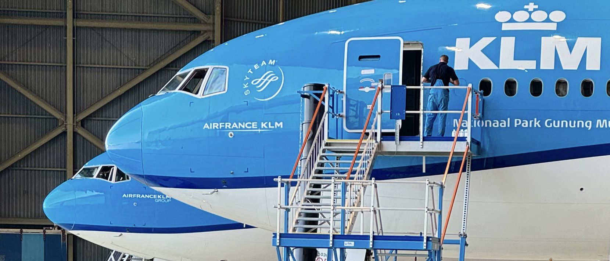
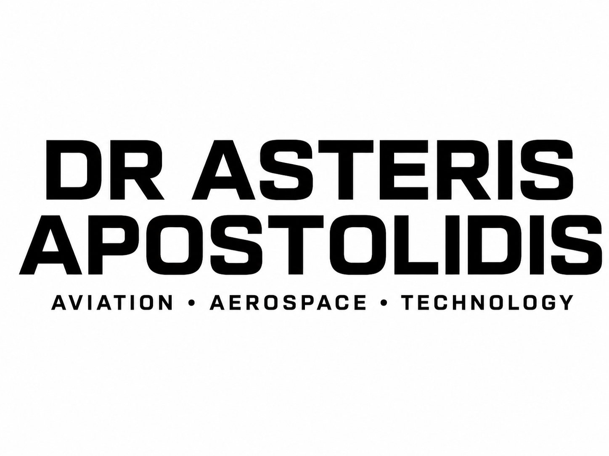
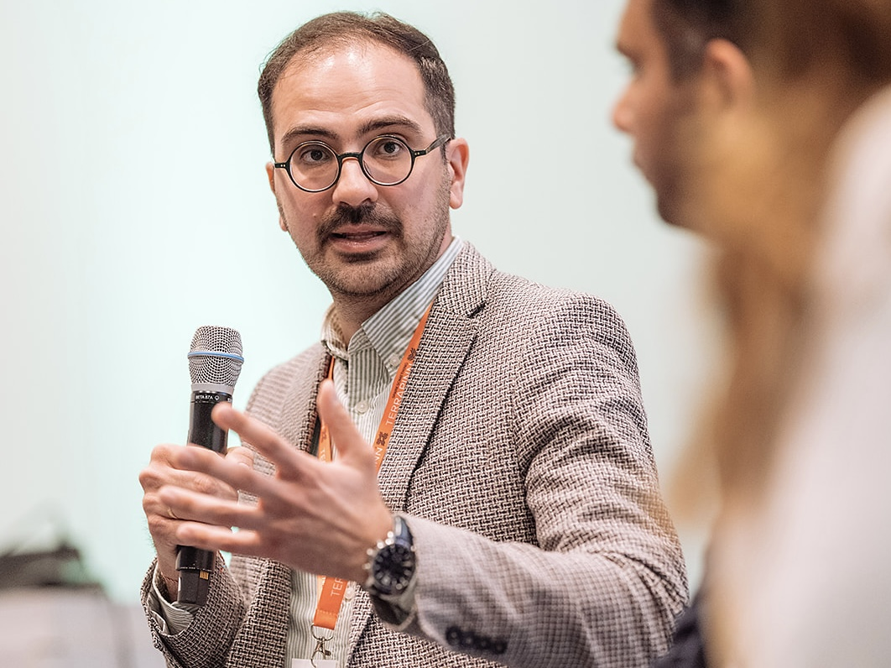
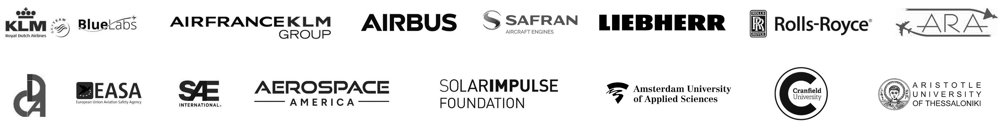
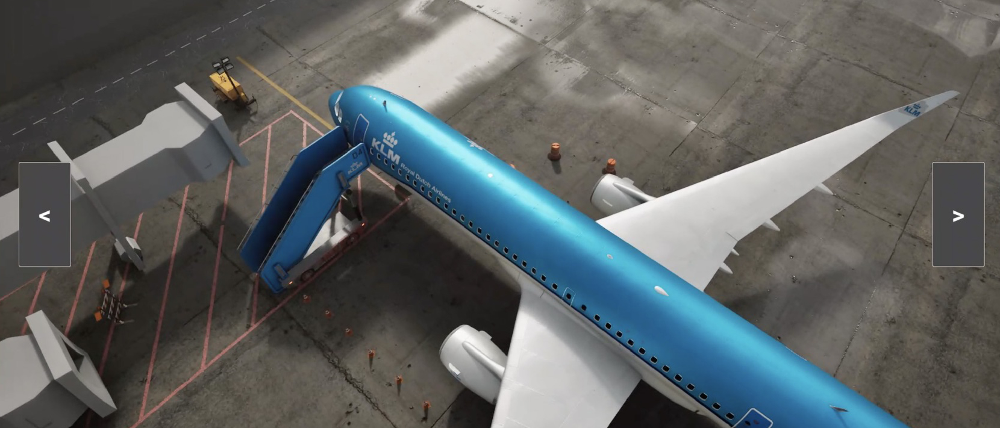
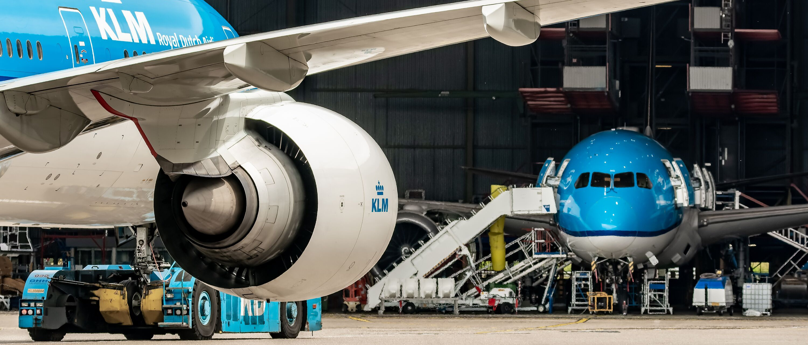
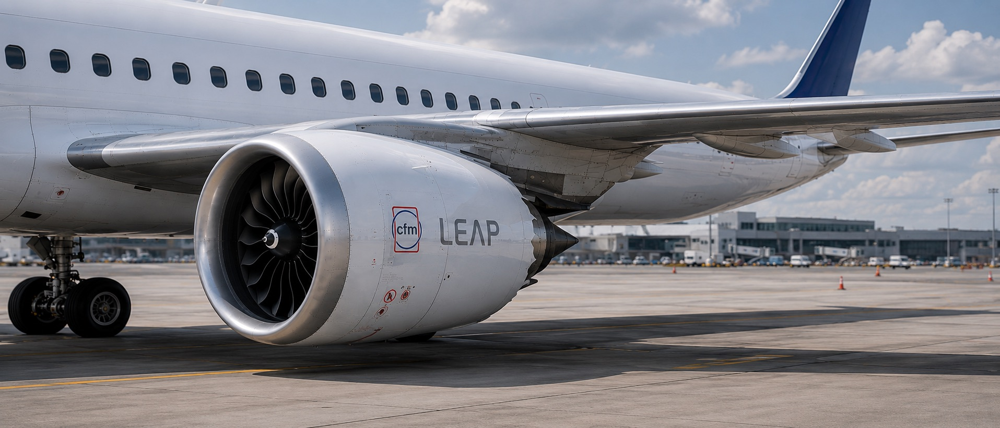

KLM Fleet Lab
Integrated Fleet Decision Support
Simulation-led decision support for future fleet choices across maintenance, operations, and network planning.
Research & Innovation • Aviation • Aerospace


I’m a technologist working across physical and digital engineering. My work sits at the intersection of aviation, technology, strategy, and sustainability. I bring technical, managerial, and research expertise from airlines, academia, and aerospace manufacturers, and I’ve led projects spanning aircraft system design, simulation, operations, and maintenance —as well as modelling of aviation processes. I serve on EASA’s Rulemaking Committee on Trustworthy AI (RMT.0742), I lead the Diagnostics & Prognostics Working Group of the Independent Data Consortium for Aviation (IDCA), and I am an expert for the European Commission, alongside roles on advisory boards, editorial boards, and international working groups.


Simulation-led decision support for future fleet choices across maintenance, operations, and network planning.

Simulation and operational intelligence for more predictable aircraft turnaround performance.
Contributing to the regulatory and technical foundations for safe, explainable, and certifiable AI in aviation.

Using data-driven diagnostics and prognostics to reduce disruption, waste, and unnecessary maintenance.

Physics-based modelling of turbine cooling and heat transfer for next-generation aircraft propulsion.
Peer-reviewed papers, conference proceedings and book chapters on predictive maintenance, diagnostics & prognostics, trustworthy AI, and gas turbine modelling.
I was born and raised in Thessaloniki, Greece, and over the last seventeen years I’ve lived in the UK, Belgium, France, and the Netherlands. Beyond aviation, I’m a lifelong photographer -darkroom to digital- drawn to landscapes, street scenes, aircraft, and the places I travel. Music is a constant companion; I’ve been collecting records and other physical formats for more than three decades. I now live in Amsterdam, where you’ll often find me building LEGO sets with my three children.
I am open to selected professional conversations and collaborations around aviation, aerospace, technology, applied research, technical publishing, lecturing, and mentoring.